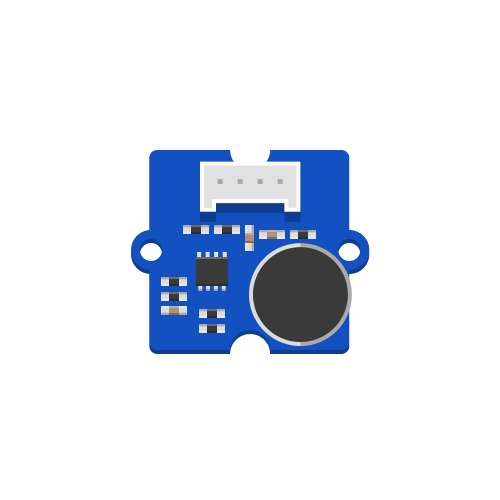

Senses the intensity of sounds in the environment and converts it into an analog signal.
More detailed information is available on the Seeed Studio Wiki.
The code example below reads the analog input from a sound sensor connected to pin A2. It then prints the sensor value to the serial monitor and introduces a short delay to prevent the program from running too quickly and overwhelming the serial monitor with data.
# --- Imports
import time
import board
import analogio
# --- Variables
sound_sensor = analogio.AnalogIn(board.A2)
# --- Functions
# --- Setup
# --- Main loop
while True:
val = sound_sensor.value
print((val,))
time.sleep(0.05)
The line sound_sensor = analogio.AnalogIn(board.A2) creates a new AnalogIn object named sound_sensor. AnalogIn provides a method called value, which retrieves the current sensor value. At the beginning of the main loop, val = sound_sensor.value is used to retrieve and store the value in a variable called val. Finally, we print the value to the Serial Monitor using print().
The code examples on this page make use Mu Editor’s Serial Plotter to visually display the sensor readings over time. The plotter can be enabled from the menu bar at the top of Mu Editor. It expects data to be printed as a tuple, so the value is formatted as (val,) instead of val.
The code in this example has been slightly altered. Instead of printing the sensor value directly, it collects 32 samples and calculates their average before printing them to achieve a smoother output.
# --- Imports
import time
import board
import analogio
# --- Variables
sound_sensor = analogio.AnalogIn(board.A2)
# --- Functions
# --- Setup
# --- Main loop
while True:
# Sample 32 sensor readings and calculate their average
value_sum = 0
for i in range(32):
value_sum = value_sum + sound_sensor.value
smoothed_val = value_sum / 32
print((smoothed_val,))
time.sleep(0.01)
A better way to write this code encapsulates the smoothing code in a function. Doing so improves the readability of the main loop and allows the code in the function to be reused elsewhere in the program:
# --- Imports
import time
import board
import analogio
# --- Variables
sound_sensor = analogio.AnalogIn(board.A2)
# --- Functions
def smooth(sensor, samples):
value_sum = 0
for i in range(samples):
value_sum = value_sum + sensor.value
return value_sum / samples
# --- Setup
# --- Main loop
while True:
smoothed_val = smooth(sound_sensor, 32)
print((smoothed_val,))
time.sleep(0.01)